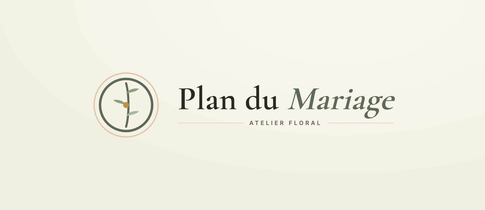
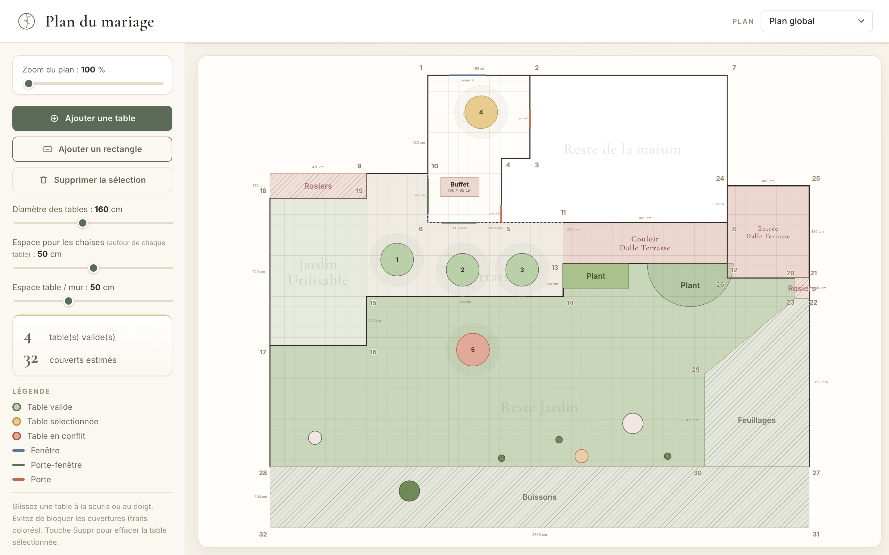
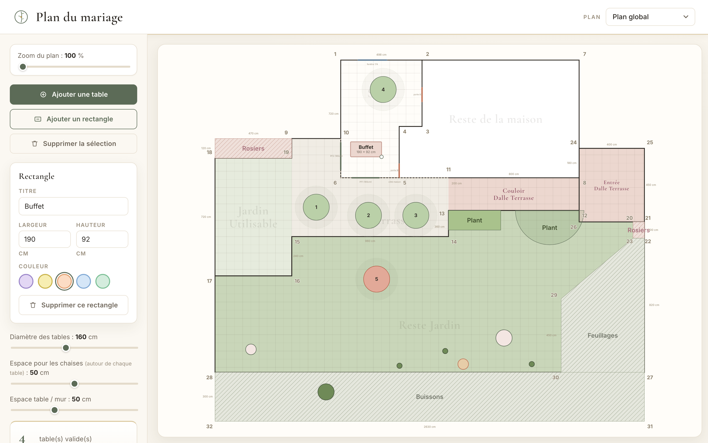
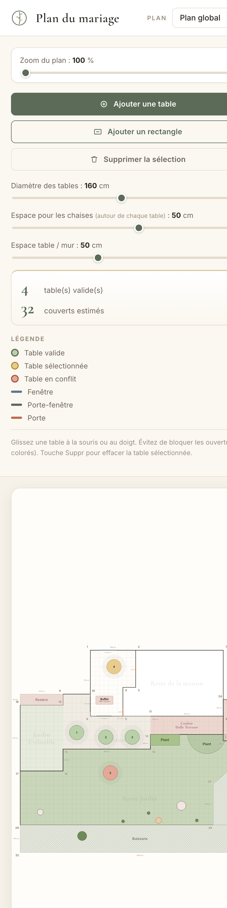

Logo

Aperçu — Plan global (desktop)



Palette
Olivier#5C6B57
Or#B8923C
Terracotta#BC6C4F
Rose poudré#C6868F
Ivoire#F6F2EA
Encre#2C2823
Choix principaux
- Typo — Cormorant Garamond (titre) + Inter (interface).
- Signature — vert olivier + un filet doré comme seul ornement.
- Plan harmonisé — ouvertures bleu ardoise / olivier / terracotta (fini le bleu-orange criard).
- Coins numérotés en taupe discret (et non bleu vif).
- Sélection de table en or, conflit en brique : élégant et lisible.
- Icônes SVG linéaires, aucun emoji ; marqueurs de jardin sobres.
- Rectangles aux 5 teintes coordonnées (lin, sauge, terracotta, brume, miel).
- Cartes blanches, arrondis doux 12 px, ombres chaudes.